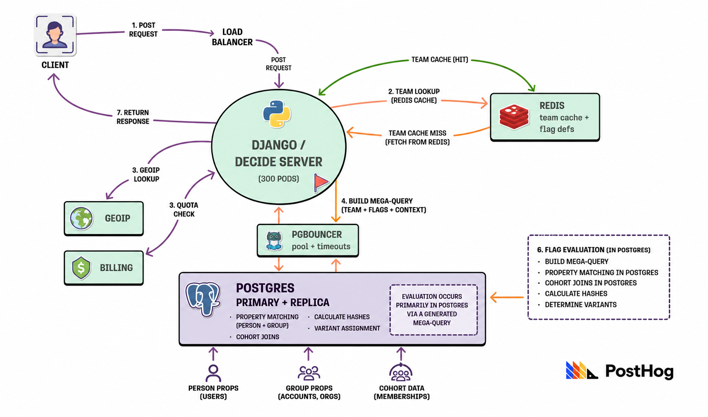
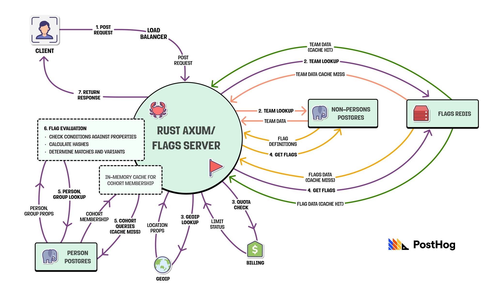
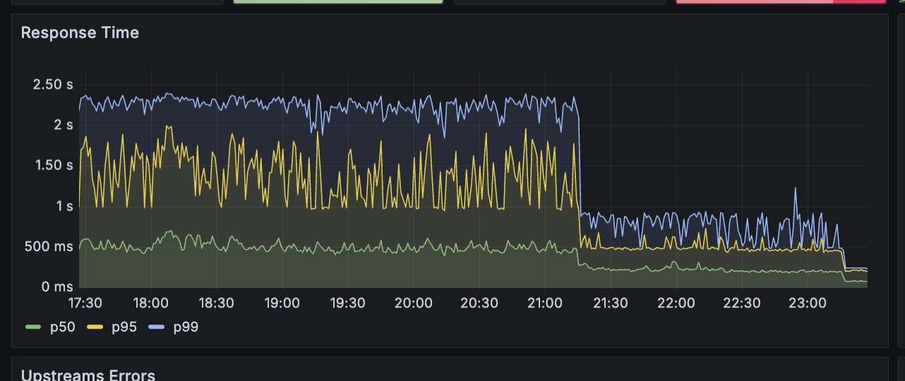
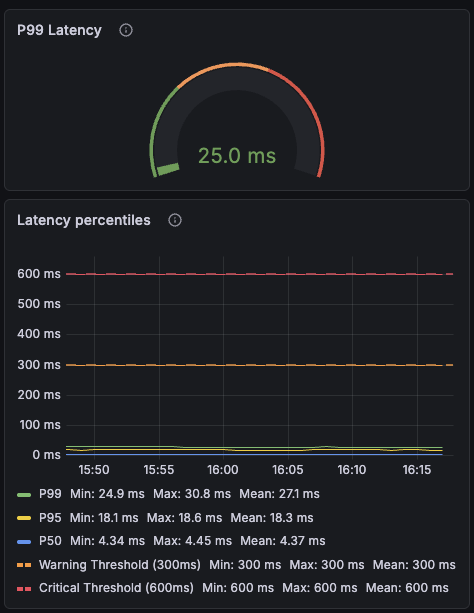

-- ONE query per request. Conditions for EVERY flag, -- evaluated inline by Postgres: SELECT person.id, person.properties, (person.properties->>'email' LIKE '%@acme.com' AND (person.properties->>'plan')::text = 'enterprise') AS flag_a, (cohort.id = ANY($2)) AS flag_b, -- ... one expression per flag, for every flag FROM person LEFT JOIN cohortpeople ON cohortpeople.person_id = person.id LEFT JOIN cohort ON cohort.id = cohortpeople.cohort_id WHERE person.team_id = $1 AND person.id = $3;
# Postgres caps out in the low hundreds, so thousands of # workers funnel through PgBouncer. Our deadlines live there too: query_timeout = 15 query_wait_timeout = 10 # in the Django request handler: # …no real per-request deadline we could reach.
| Async PythonFastAPI | NodeHyperExpress | RustTokio | |
|---|---|---|---|
| Eval off the ORM | No | Yes | Yes |
| Fast async runtime | Async, still slow | Async, slower than Rust | Fast and async |
| Pool without PgBouncer | No | Needs a proxy | Native, via sqlx |
| Team can ship it | Yes | Yes | Yes |
| Verdict | Same problems, deferred | Forced into a proxy | Won or tied on everything |

// sqlx owns the pool — no PgBouncer in the path. let pool = PgPoolOptions::new() .max_connections(20) .acquire_timeout(Duration::from_millis(50)) .connect(&url).await?; // And the deadline lives in our code, per request: let row = timeout(Duration::from_millis(100), q.fetch_one(&pool)).await?;
// Fetch raw properties once, then fan the matching // out across cores — the thing the GIL never allowed. let results: Vec<FlagMatch> = flags .par_iter() // rayon .map(|flag| flag.evaluate(&props)) .collect();

